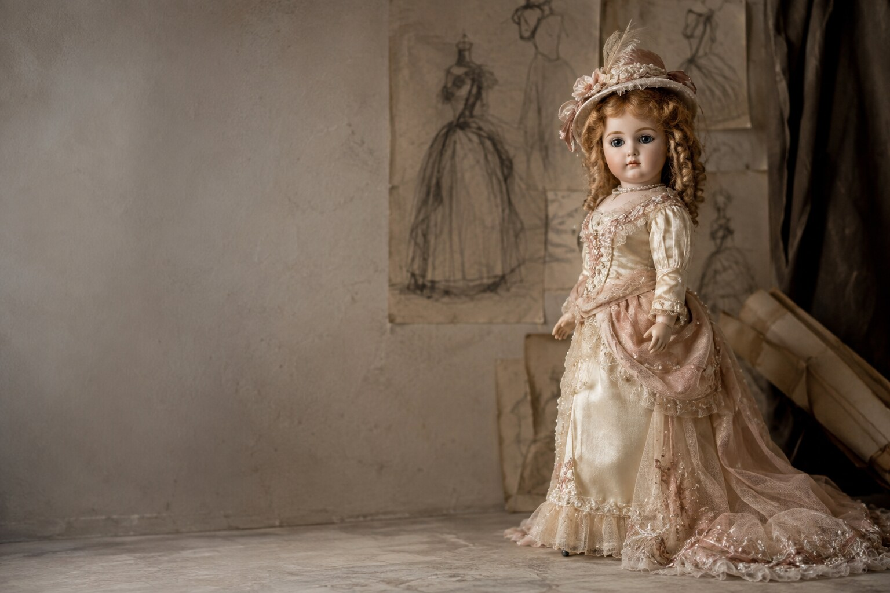
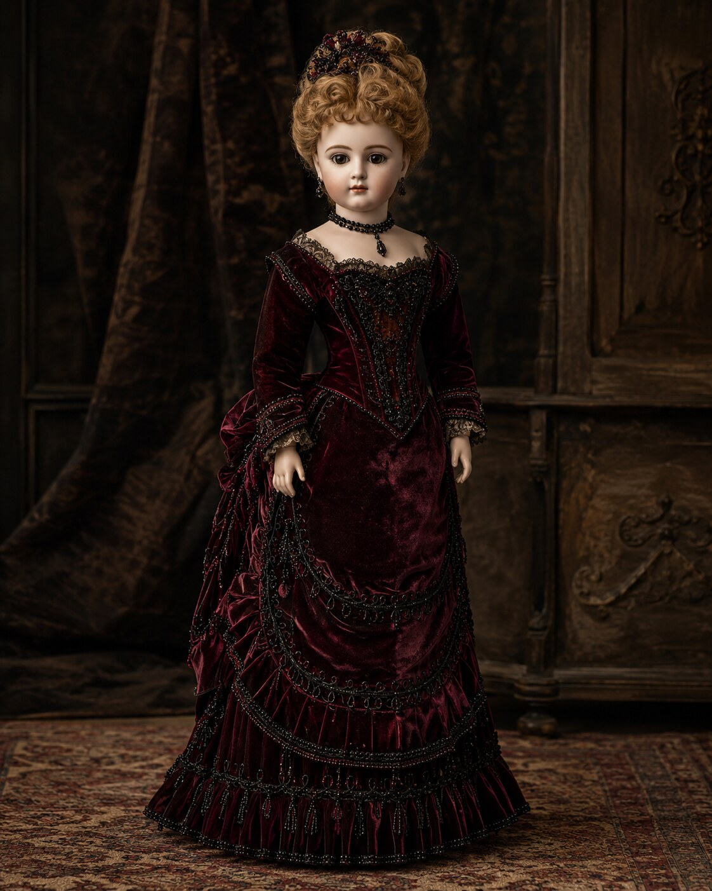
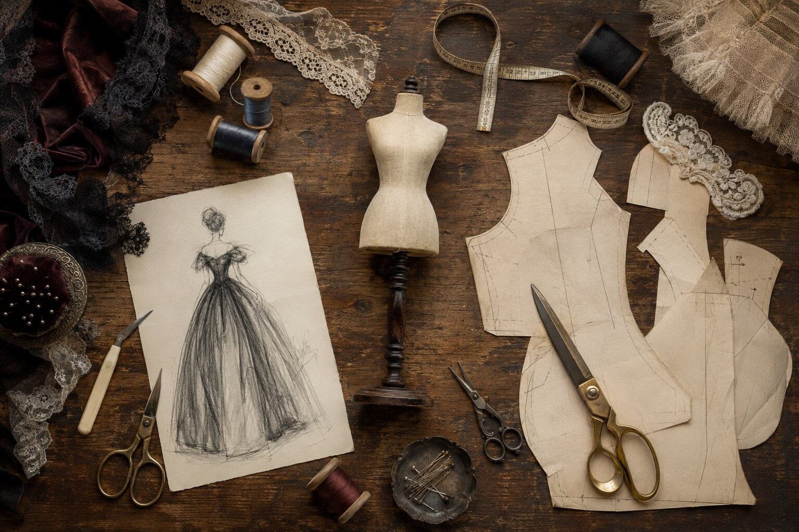

Bespoke dressmaking · Commissions worldwide
Small dresses.
Enduring stories.
One-of-one garments for antique dolls, researched, drafted, and sewn entirely by hand.
View selected worksA lifetime of dressmaking,
now worked in miniature.
The Maison
Couture knowledge,
translated in miniature.
For collectors who see an antique doll not simply as an object, but as a keeper of memory.
Portfolio · Selected works
The private
wardrobe.
Each garment is a singular commission. These studies show the range of eras, materials, and hand techniques available to collectors.

Not a catalogue. A record of singular pieces.
Discuss a garmentInside the atelier
From line
to heirloom.
Luxury at this scale is invisible until you look closely: the grain of silk, a hand-worked buttonhole, a seam pressed no wider than a breath.

The working table · brass shears, silk thread, scale patterns, toile, and design study
- I
Photographs · measurements · provenance
The conversation
We begin with the doll herself: her scale, age, condition, character, and the history you wish to honor.
- II
Research · sketch · proportion
The silhouette
Period references become an original hand-drawn study, refined until the silhouette belongs naturally to her.
- III
Draft · toile · fitting
The paper pattern
Every pattern is drafted from her exact measurements. A cotton toile tests balance and ease before precious cloth is cut.
- IV
Cut · stitch · embellish
The handwork
Silks, lawns, laces, and trims are shaped at miniature scale. Seams, buttonholes, and details are patiently finished by hand.
- V
Final fitting · archive · presentation
The atelier record
The completed garment is photographed, documented, and wrapped for safekeeping with its material and design record.
Atelier vocabulary
- Silk faille
- Cotton lawn
- Antique lace
- Soutache
- Jet beadwork
- Hand-dyed ribbon
at the needle
The master seamstress
A lifetime
in cloth.
Her roots are in women’s dressmaking: decades spent understanding how cloth falls, how a sleeve turns, and how a pattern becomes personal. Later, that knowledge found a more intimate canvas in antique dolls.
Today, collectors across the world entrust her with garments that restore character without pretending to be original. Every piece is researched, drafted, and finished one at a time by the same pair of hands.
“The scale becomes smaller. The standard of the work does not.”
A private service
Begin with
her photograph.
Tell us about your doll, her measurements, and the garment you imagine. A limited number of commissions are accepted each season.
Helpful to include
- Photographs — front, back, and in profile
- Her height, plus maker or mould mark if known
- The era, mood, or garment you have in mind
- Any date or occasion the piece is for